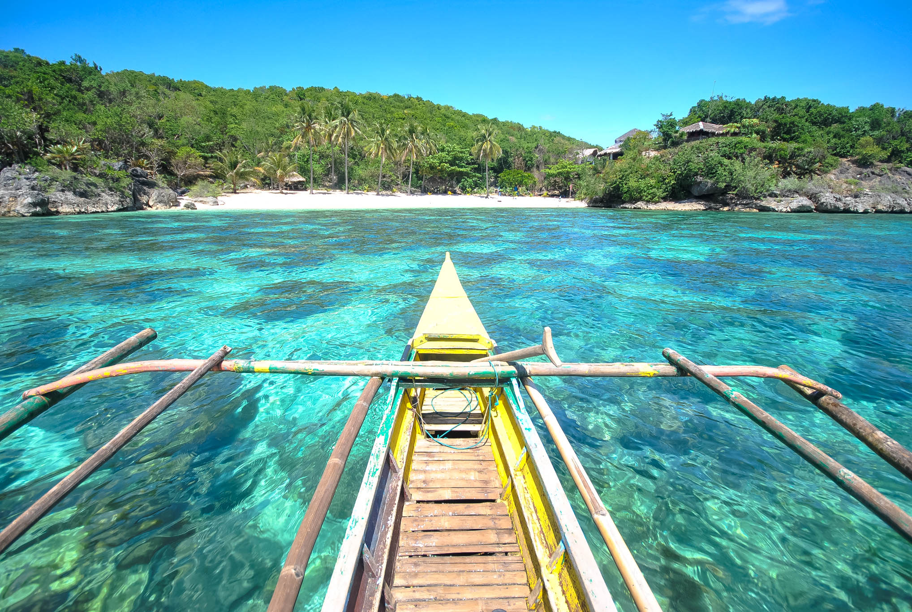

Ticao Island in Masbate is one of the Philippines' premier whale shark encounter destinations — a pristine island where butanding (whale sharks) gather in the Ticao Pass, offering snorkelers and divers an unforgettable encounter with the ocean's gentle giants.

Ticao Island is a large island in the province of Masbate, located at the northern tip of the Bicol Region where the Sibuyan Sea meets the Philippine Sea. The island is best known for the Ticao Pass — a deep-water channel between Ticao and the Bondoc Peninsula that serves as a feeding ground for whale sharks (butanding), manta rays, and thresher sharks.
The whale shark encounters at Ticao are considered among the most responsible in the Philippines · interactions are regulated to minimize disturbance to the animals, and the experience of swimming alongside these massive, gentle creatures in open water is profoundly moving.
Beyond the marine life, Ticao Island offers pristine beaches, lush interior forests, and the Buntod Reef Marine Sanctuary — a protected coral reef teeming with colorful fish and marine biodiversity. The island remains relatively undeveloped, preserving its natural character and offering a genuine off-the-beaten-path experience.
Ticao Island is reached via Masbate City or via ferry from Pilar, Sorsogon. The island's main town is San Jacinto, which serves as the base for whale shark and dive tours.
Fly from Manila to Masbate Airport (~1 hour). Cebu Pacific and Philippine Airlines operate this route. From the airport, take a tricycle to the Masbate City port (~15 minutes).
Flight: ~1 hr | ~₱1,500₱3,500 one-wayFrom Manila, take a bus to Pilar, Sorsogon and board a ferry to San Jacinto, Ticao Island (~1.5₱2 hours). This is a more direct route to Ticao without going through Masbate City.
Ferry: ~1.5₱2 hrs | ~₱150–₱250From Masbate City port, take a ferry or pump boat to San Jacinto, Ticao Island (~1.5₱2 hours). San Jacinto is the main town on Ticao and the base for whale shark tours and dive operators.
Ferry: ~1.5₱2 hrs | ~₱100–₱200Arrange a whale shark snorkeling or diving tour through your accommodation or a local dive operator in San Jacinto. Tours typically depart early morning to the Ticao Pass feeding grounds. Responsible interaction guidelines must be followed.
Tour: ~₱800–₱1,500 per person | Dive tours availableClick any pin to explore Ticao Island, the Ticao Pass, Buntod Reef, and the key sites of Masbate province.
Combine whale shark encounters with Buntod Reef snorkeling and the natural beauty of Ticao Island for an unforgettable Masbate adventure.
Depart early by boat to the Ticao Pass feeding grounds. Your guide will locate the whale sharks and brief you on responsible interaction guidelines. Slip into the water and swim alongside these magnificent creatures — an experience that will stay with you for life.
After the whale shark encounter, head to Buntod Reef for snorkeling among healthy coral gardens teeming with colorful reef fish, sea turtles, and other marine life. The reef is one of the best-preserved in Masbate.
Return to San Jacinto for lunch and rest. Explore the town, visit the local market, and enjoy fresh seafood. The afternoon is perfect for relaxing on the beach or arranging a second dive for experienced divers.
Hire a boat for an island hopping tour around Ticao's coastline. Visit secluded beaches, sea caves, and snorkeling spots that most visitors never see. The island's interior forests are also worth exploring with a local guide.
Take the afternoon ferry back to Masbate City. Visit the Masbate Cathedral and explore the city before your onward journey. Try Masbate's famous beef dishes for dinner — the province is the cattle capital of the Philippines.
Fly back to Manila from Masbate Airport, or take a ferry to your next destination. Masbate is well-connected to Cebu, Iloilo, and other Visayas ports for onward island-hopping adventures.
"Swimming with whale sharks at Ticao Pass was the single most incredible wildlife experience of my life. The animal that came closest to me was at least 8 meters long — it glided past so slowly and gracefully, completely unbothered by my presence. The guides were professional and strict about the no-touching rules, which made the whole experience feel respectful and right. Ticao is less crowded than Donsol and the encounters feel more natural."
"Ticao Island is one of those places that reminds you why you travel. The whale sharks were extraordinary, but the whole island experience was special — the Buntod Reef snorkeling, the friendly people of San Jacinto, the fresh seafood, the quiet beaches. It's the kind of destination that hasn't been overrun yet, and I hope it stays that way. Go now, before everyone discovers it."